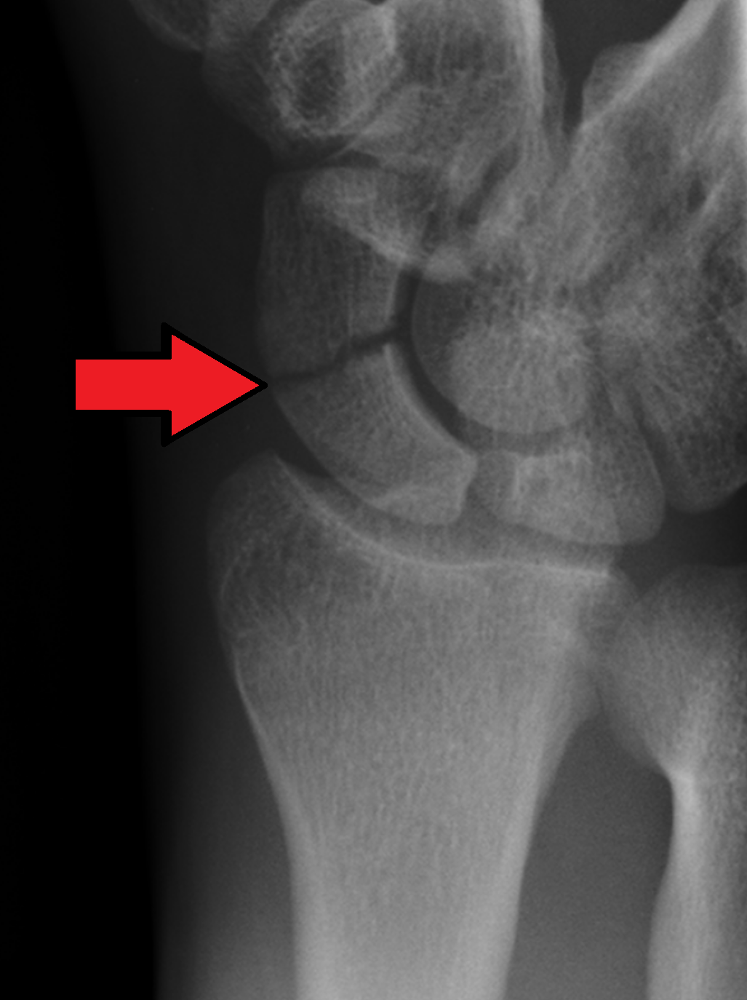

Ficha del catálogo
Fractura de escafoides
- Sistema
- Óseo
- Modalidad
- RX
- Región
- Muñeca
- Dificultad
- Intermedio
Es la fractura más frecuente de los huesos del carpo y aparece sobre todo en adultos jóvenes tras una caída sobre la mano extendida. Su importancia clínica es desproporcionada respecto a su tamaño porque la vascularización del escafoides entra por su polo distal, de modo que las fracturas proximales pueden dejar al fragmento sin aporte sanguíneo. Un diagnóstico tardío se asocia a seudoartrosis y a colapso degenerativo de la muñeca.
Técnica
Serie de escafoides: Posteroanterior con desviación cubital, lateral y dos oblicuas. La desviación cubital elonga el hueso y despliega su cintura, que es donde se localiza la mayoría de los trazos.
Qué observar
- Línea radiolúcida transversal en la cintura del escafoides, a menudo muy fina
- Pérdida de continuidad de la cortical en cualquiera de las cuatro proyecciones
- Borramiento u ondulación de la almohadilla grasa del escafoides en la cara radial
- Aumento del espacio escafolunar, que sugiere lesión ligamentaria asociada
- Esclerosis del polo proximal en estudios de control, signo de necrosis avascular
- Alineación del carpo en la proyección lateral, buscando inestabilidad
Hallazgos
Trazo de fractura habitualmente en la cintura del escafoides, con desplazamiento mínimo o nulo, acompañado de aumento de volumen de partes blandas de la cara radial de la muñeca.
Perlas
Una radiografía inicial normal no descarta la fractura: Hasta una cuarta parte no se ve el primer día. Ante dolor en la tabaquera anatómica se inmoviliza y se repite el estudio en una o dos semanas, o se completa con tomografía o resonancia.
Diagnóstico diferencial
- Esguince de muñeca
- No hay trazo en los controles diferidos ni edema óseo en resonancia.
- Fractura del radio distal
- El trazo asienta en la metáfisis radial y no en el carpo.
- Hueso accesorio del carpo
- Bordes corticales completos y redondeados, sin dolor selectivo.
Simuladores
- Superposición de trabéculas del carpo
- Efecto Mach entre huesos adyacentes
- Osículos accesorios congénitos
Por modalidad
- RX
- Primera línea y suficiente cuando el trazo es visible
- TC
- Define el trazo, el desplazamiento y la consolidación con gran detalle
- RM
- Método más sensible en las primeras horas por el edema medular
Protocolo
Cuatro proyecciones dedicadas de escafoides. Si persiste la sospecha con estudio normal, tomografía con cortes finos en el eje largo del hueso o resonancia con secuencias sensibles al líquido.
Clasificación
Se describen por localización en polo proximal, cintura y polo distal. Cuanto más proximal es el trazo, mayor el riesgo de necrosis avascular y de retraso de consolidación.
Errores frecuentes
- Dar el alta por una radiografía inicial normal pese a la exploración compatible
- Confundir un osículo accesorio con un fragmento fracturario
- No valorar el espacio escafolunar y pasar por alto una inestabilidad asociada

escafoides carpo muñeca fractura oculta tabaquera anatomica necrosis avascular seudoartrosis